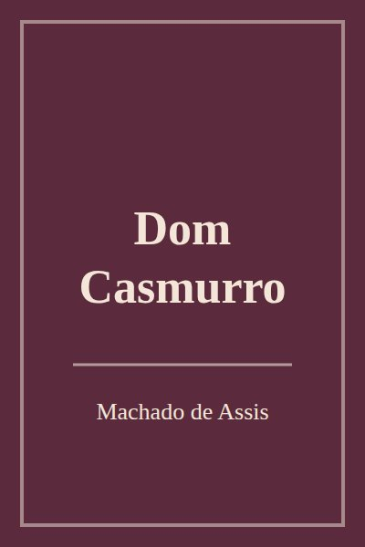

Dom Casmurro

Informações
- Autor: Machado de Assis
- Categoria: Romance
- Ano: 1899
- Páginas: 256
- Status: Lido
- Nota: 5
- Terminei de ler em: 15/03/2026
- Favorito: Sim
Observações
Li para a aula de literatura. Gostei muito do final e fiquei na dúvida sobre a Capitu.
Editar Voltar